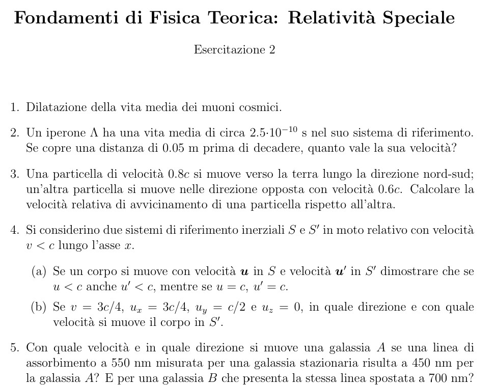

Fondamenti di Fisica Teorica: Relatività Speciale
Barone top, qui inseriti i testi e soluzioni dei primi 3 tutoraggi
Esercitazione 1
Scarica PDF Esercitazione 1
Esercizio 1
Mostrare, attraverso un calcolo esplicito, che l'equazione delle onde
∇²ψ - (1/c²) ∂²ψ/∂t² = 0
non è invariante in forma rispetto alle trasformazioni di Galilei (si supponga ψ invariante, ψ'(x, t') = ψ(x, t)).
Impostazione: trasformazioni di Galilei e ipotesi su ψ
Consideriamo due sistemi inerziali S e S' con S' che si muove lungo x con velocità costante v rispetto a S.
Le trasformazioni di Galilei (moto lungo x) sono:
x' = x − v t
y' = y
z' = z
t' = t
L’ipotesi del testo è che il campo sia “invariante” nel senso:
y' = y
z' = z
t' = t
ψ'(x',t') = ψ(x,t)
Derivate spaziali: cosa succede a ∇²ψ
Poiché x = x' + v t' e t = t', la derivata spaziale rispetto a x coincide con quella rispetto a x':
∂/∂x = ∂/∂x' , ∂/∂y = ∂/∂y' , ∂/∂z = ∂/∂z'
Quindi:
∇²ψ = ∇'²ψ'
Derivata temporale: regola della catena, un passaggio alla volta
Siccome x' = x − v t, allora x' dipende da t. Con ψ'(x',t') = ψ(x,t) usiamo la catena:
∂ψ/∂t = (∂ψ'/∂t')·(∂t'/∂t) + (∂ψ'/∂x')·(∂x'/∂t)
Ora:
t' = t ⇒ ∂t'/∂t = 1
x' = x − v t ⇒ ∂x'/∂t = −v
Quindi:
x' = x − v t ⇒ ∂x'/∂t = −v
∂/∂t = ∂/∂t' − v ∂/∂x'
Seconda derivata temporale: sviluppo completo senza saltare passaggi
Applichiamo di nuovo l’operatore:
∂²/∂t² = (∂/∂t' − v ∂/∂x') (∂/∂t' − v ∂/∂x')
Sviluppiamo:
= ∂²/∂t'² − v ∂²/(∂x'∂t') − v ∂²/(∂t'∂x') + v² ∂²/∂x'²
Poiché (su funzioni regolari) le derivate miste commutano:
∂²/(∂x'∂t') = ∂²/(∂t'∂x')
allora:
∂²/∂t² = ∂²/∂t'² − 2v ∂²/(∂x'∂t') + v² ∂²/∂x'²
Sostituzione nell’equazione delle onde e confronto di forma
In S:
∇²ψ − (1/c²) ∂²ψ/∂t² = 0
Sostituiamo ψ = ψ'(x',t'), ∇² = ∇'², e la formula per ∂²/∂t²:
∇'²ψ' − (1/c²)[ ∂²ψ'/∂t'² − 2v ∂²ψ'/(∂x'∂t') + v² ∂²ψ'/∂x'² ] = 0
Distribuiamo il segno −(1/c²):
∇'²ψ' − (1/c²)∂²ψ'/∂t'²
+ (2v/c²) ∂²ψ'/(∂x'∂t')
− (v²/c²) ∂²ψ'/∂x'² = 0
L’equazione “stessa forma” in S' sarebbe:
∇'²ψ' − (1/c²) ∂²ψ'/∂t'² = 0
Ma qui compaiono termini extra:
- (2v/c²) ∂²ψ'/(∂x'∂t')
- −(v²/c²) ∂²ψ'/∂x'²
Messaggio fisico: l’equazione delle onde “preferisce” le trasformazioni di Lorentz (dove c è invariata), non quelle di Galilei.
Esercizio 2
Esperimento di Michelson-Morley
Obiettivo: cosa si voleva misurare
Si confrontano i tempi di volo della luce lungo due bracci perpendicolari (lunghezza L).
Nell’idea classica con “etere”, l’apparato si muove nell’etere con velocità v.
Se i due tempi sono diversi, cambia la fase relativa dei due fasci ⇒ spostamento delle frange.
Braccio parallelo al moto: tempo di andata + ritorno
- Andata: la luce rincorre lo specchio ⇒ velocità relativa c − v ⇒ tempo t₁ = L/(c−v).
- Ritorno: la luce torna verso il beam-splitter ⇒ velocità relativa c + v ⇒ tempo t₂ = L/(c+v).
t∥ = L/(c−v) + L/(c+v)
Denominatore comune (c−v)(c+v)=c²−v²:
t∥ = L[(c+v)+(c−v)]/(c²−v²) = L(2c)/(c²−v²)
Quindi:
t∥ = (2L/c) · 1/(1−v²/c²)
Braccio perpendicolare: triangolo e componente trasversa
Sul braccio perpendicolare la luce deve “inclinarsi” per colpire lo specchio mentre l’apparato scorre.
Se la luce ha modulo c rispetto all’etere:
c² = v² + u_y² ⇒ u_y = √(c² − v²)
Tempo di andata:
t_and = L/√(c²−v²)
Ritorno identico:
t⊥ = 2L/√(c²−v²) = (2L/c) · 1/√(1−v²/c²)
Differenza dei tempi e frange: sviluppo fino a (v/c)²
Definiamo β = v/c.
t∥ = (2L/c) · 1/(1−β²)
t⊥ = (2L/c) · 1/√(1−β²)
Per β ≪ 1 usiamo:
t⊥ = (2L/c) · 1/√(1−β²)
1/(1−β²) ≈ 1 + β²
1/√(1−β²) ≈ 1 + β²/2
Quindi:
1/√(1−β²) ≈ 1 + β²/2
t∥ ≈ (2L/c)(1+β²)
t⊥ ≈ (2L/c)(1+β²/2)
Sottraiamo:
t⊥ ≈ (2L/c)(1+β²/2)
Δt = t∥ − t⊥
≈ (2L/c)[(1+β²) − (1+β²/2)]
= (2L/c)(β²/2)
= (L/c)β²
Il cammino ottico equivalente è cΔt, quindi numero di frange:
N = (cΔt)/λ ≈ (c/λ)(L/c)β² = (L/λ)β² = (L/λ)(v²/c²)
Ruotando l’apparato di 90° il segno si inverte ⇒ spostamento totale atteso:
ΔN_rot ≈ 2(L/λ)(v²/c²)
Stima numerica tipica (con conti espliciti, riga per riga)
Prendiamo valori tipici:
λ ≈ 500 nm = 500×10⁻⁹ m = 5×10⁻⁷ m
v ≈ 30 km/s = 30×10³ m/s = 3×10⁴ m/s
c ≈ 3×10⁸ m/s
L ≈ 11 m
1) Calcolo v²
v ≈ 30 km/s = 30×10³ m/s = 3×10⁴ m/s
c ≈ 3×10⁸ m/s
L ≈ 11 m
v = 3×10⁴ ⇒ v² = (3×10⁴)² = 3² × (10⁴)² = 9×10⁸
2) Calcolo c²
c = 3×10⁸ ⇒ c² = (3×10⁸)² = 3² × (10⁸)² = 9×10¹⁶
3) Rapporto v²/c²
v²/c² = (9×10⁸)/(9×10¹⁶)
= (9/9)×10^(8−16)
= 1×10⁻⁸
= 10⁻⁸
4) Rapporto L/λ
L/λ = 11 / (5×10⁻⁷)
= (11/5)×10⁷
= 2.2×10⁷
5) Spostamento di frange atteso dopo rotazione
ΔN_rot ≈ 2(L/λ)(v²/c²)
= 2 · (2.2×10⁷) · (10⁻⁸)
Moltiplichiamo (2.2×10⁷)·(10⁻⁸) = 2.2×10^(7−8) = 2.2×10⁻¹ = 0.22:
ΔN_rot ≈ 2 · 0.22 = 0.44
Quindi lo spostamento atteso era ~ 0.4 frange, osservabile, ma il risultato sperimentale fu compatibile con zero.
Conclusione: la costanza di c e l’assenza di “vento d’etere” portano naturalmente alle trasformazioni di Lorentz.
Esercizio 3
Quanto misura il raggio della terra per un osservatore sul sole tenendo conto che il raggio di riposo della terra vale circa 6400 km?
Che cosa cambia: contrazione solo lungo la direzione del moto
Nel sistema di riposo della Terra il raggio è:
R₀ = 6400 km
Per un osservatore che vede la Terra muoversi a velocità v:
- la dimensione parallela al moto si contrae: R∥ = R₀/γ
- la dimensione perpendicolare al moto resta: R⊥ = R₀
Velocità della Terra vista dal Sole (stima)
Usiamo la velocità orbitale media:
v ≈ 30 km/s = 3×10⁴ m/s
c ≈ 3×10⁸ m/s
c ≈ 3×10⁸ m/s
Calcolo di γ e della variazione del raggio (passaggi numerici completi)
1) Calcolo β = v/c
β = (3×10⁴)/(3×10⁸) = 10⁻⁴
2) Calcolo β²
β² = (10⁻⁴)² = 10⁻⁸
3) Fattore di Lorentz
γ = 1/√(1−β²) = 1/√(1−10⁻⁸)
Poiché 10⁻⁸ è molto piccolo:
√(1−10⁻⁸) ≈ 1 − (10⁻⁸)/2 = 1 − 5×10⁻⁹
Quindi:
γ = 1/(1−5×10⁻⁹) ≈ 1 + 5×10⁻⁹
4) Contrazione del raggio lungo il moto
R∥ = R₀/γ ≈ R₀(1 − 5×10⁻⁹)
5) Differenza assoluta ΔR
ΔR = R₀ − R∥ ≈ R₀·(5×10⁻⁹)
Convertiamo R₀ in metri:
R₀ = 6400 km = 6400×10³ m = 6.4×10⁶ m
Moltiplichiamo:
ΔR ≈ (6.4×10⁶)(5×10⁻⁹)
= (6.4·5)×10^(6−9)
= 32×10⁻³
= 0.032 m
Quindi la variazione è circa:
ΔR ≈ 3.2 cm
Risposta: l’osservatore sul Sole vede un raggio lungo la direzione del moto leggermente più piccolo:
R∥ ≈ R₀/γ, con riduzione ~ 3 cm. Il raggio trasverso resta R⊥ = R₀.
Esercizio 4
Un sistema di riferimento inerziale S' ha una velocità v = 0.6 c rispetto ad un sistema S. Gli orologi sono tali da segnare t = t' = 0 nel punto x = x' = 0.
(a) Un evento accade in S a t = 2 × 10⁻⁷ s nel punto x = 50 m. A che istante questo evento accade in S'?
(b) Se un secondo evento accade a t = 3 × 10⁻⁷ s nel punto x = 10 m in S, qual è l'intervallo di tempo tra i due eventi nel sistema S'?
(a) Un evento accade in S a t = 2 × 10⁻⁷ s nel punto x = 50 m. A che istante questo evento accade in S'?
(b) Se un secondo evento accade a t = 3 × 10⁻⁷ s nel punto x = 10 m in S, qual è l'intervallo di tempo tra i due eventi nel sistema S'?
Formula usata: trasformazioni di Lorentz (configurazione standard)
Assumiamo S' che si muove lungo +x con velocità v rispetto a S.
Le trasformazioni (da S a S') sono:
x' = γ(x − v t)
t' = γ(t − v x / c²)
dove:
t' = γ(t − v x / c²)
γ = 1/√(1−v²/c²)
Calcolo di γ quando v = 0.6c (tutti i passaggi)
v = 0.6c ⇒ v²/c² = (0.6)² = 0.36
Quindi:
1−v²/c² = 1 − 0.36 = 0.64
Radice:
√0.64 = 0.8
Quindi:
γ = 1/0.8 = 1.25
(a) Evento 1: t = 2×10⁻⁷ s, x = 50 m → calcolo di t'
Usiamo:
t' = γ(t − v x / c²)
Calcoliamo prima il termine v x / c².
Siccome v = 0.6c:
v x / c² = (0.6c · x)/c² = 0.6 · x / c
Mettiamo x = 50 m:
v x / c² = 0.6 · 50 / c = 30 / c
Ora sostituiamo c = 3×10⁸ m/s:
30/c = 30/(3×10⁸) s
= (30/3)×10⁻⁸ s
= 10×10⁻⁸ s
= 1×10⁻⁷ s
Quindi:
t − v x / c² = 2×10⁻⁷ − 1×10⁻⁷ = 1×10⁻⁷ s
Moltiplichiamo per γ = 1.25:
t' = 1.25 · (1×10⁻⁷) = 1.25×10⁻⁷ s
Risposta (a): t' = 1.25×10⁻⁷ s.
(b) Evento 2: t = 3×10⁻⁷ s, x = 10 m → t' e intervallo Δt'
Calcoliamo t₂' con la stessa formula:
t₂' = γ(t₂ − v x₂ / c²)
1) Calcolo v x₂ / c²
v x₂ / c² = 0.6 · x₂ / c = 0.6 · 10 / c = 6/c
Con c = 3×10⁸:
6/c = 6/(3×10⁸) s
= (6/3)×10⁻⁸ s
= 2×10⁻⁸ s
2) Sottrazione
t₂ − v x₂/c² = 3×10⁻⁷ − 2×10⁻⁸
Riscriviamo 3×10⁻⁷ come 30×10⁻⁸:
3×10⁻⁷ = 30×10⁻⁸
Quindi:
30×10⁻⁸ − 2×10⁻⁸ = 28×10⁻⁸ = 2.8×10⁻⁷ s
3) Moltiplicazione per γ = 1.25
t₂' = 1.25 · 2.8×10⁻⁷
Facciamo 2.8·1.25:
1.25 = 5/4
2.8·(5/4) = (2.8·5)/4 = 14/4 = 3.5
Quindi:
2.8·(5/4) = (2.8·5)/4 = 14/4 = 3.5
t₂' = 3.5×10⁻⁷ s
4) Intervallo di tempo tra i due eventi in S'
Δt' = t₂' − t₁' = 3.5×10⁻⁷ − 1.25×10⁻⁷
Riscriviamo 3.5×10⁻⁷ come 350×10⁻⁹ e 1.25×10⁻⁷ come 125×10⁻⁹:
3.5×10⁻⁷ = 350×10⁻⁹
1.25×10⁻⁷ = 125×10⁻⁹
Sottrazione:
1.25×10⁻⁷ = 125×10⁻⁹
350×10⁻⁹ − 125×10⁻⁹ = 225×10⁻⁹ = 2.25×10⁻⁷ s
Risposta (b): Δt' = 2.25×10⁻⁷ s.
Controllo rapido (senza cambiare il risultato): si può anche usare direttamente
Δt' = γ(Δt − vΔx/c²) con Δt = 1×10⁻⁷ s e Δx = 10−50 = −40 m.
Esercizio 5
Due eventi accadono allo stesso istante in un sistema di riferimento inerziale S e sono separati da una distanza di 1 km lungo l'asse x. Qual è la loro separazione temporale misurata in un sistema di riferimento inerziale S' che si muove a velocità costante rispetto ad S lungo x e dove la distanza spaziale misurata vale 2 km?
Dati e trasformazioni per intervalli (Δx, Δt)
In S:
Δt = 0
Δx = 1 km = 1000 m
In S' viene misurata una separazione spaziale:
Δx = 1 km = 1000 m
Δx' = 2 km = 2000 m
Per un boost lungo x (da S a S'):
Δx' = γ(Δx − vΔt)
Δt' = γ(Δt − vΔx/c²)
Δt' = γ(Δt − vΔx/c²)
1) Ricaviamo γ dal dato sulla distanza: Δt = 0 ⇒ Δx' = γΔx
Poiché Δt = 0:
Δx' = γ(Δx − v·0) = γΔx
Quindi:
γ = Δx'/Δx = (2 km)/(1 km) = 2
2) Ricaviamo β = v/c dal valore di γ (tutti i passaggi)
γ = 1/√(1−β²)
Mettiamo γ = 2:
2 = 1/√(1−β²)
Invertiamo entrambi i membri:
1/2 = √(1−β²)
Eleviamo al quadrato:
(1/2)² = 1−β²
1/4 = 1−β²
Portiamo β² a sinistra e 1/4 a destra:
1/4 = 1−β²
β² = 1 − 1/4 = 3/4
Quindi:
β = √(3/4) = √3 / 2 ≈ 0.866
3) Calcolo di Δt' usando Δt' = γ(Δt − vΔx/c²)
Poiché Δt = 0:
Δt' = γ(0 − vΔx/c²) = −γ vΔx/c²
Scriviamo v = βc:
Δt' = −γ (βc) Δx / c² = −γβ Δx / c
Calcoliamo γβ:
γβ = 2 · (√3/2) = √3
Quindi:
Δt' = −√3 · (Δx/c)
Ora calcoliamo Δx/c con Δx = 1000 m e c = 3×10⁸ m/s:
Δx/c = 1000/(3×10⁸) s
= (1×10³)/(3×10⁸) s
= (1/3)×10^(3−8) s
= (1/3)×10⁻⁵ s
= 0.333...×10⁻⁵ s
= 3.333...×10⁻⁶ s
Moltiplichiamo per √3 ≈ 1.732:
|Δt'| = 1.732 · (3.333...×10⁻⁶) s
Moltiplicazione:
1.732 · 3.333 ≈ 5.773
quindi:
|Δt'| ≈ 5.773×10⁻⁶ s
Risposta:
Δt' ≈ −5.77×10⁻⁶ s
(se l’evento a x maggiore è il “secondo” in S)
In valore assoluto: 5.77 μs.
(se l’evento a x maggiore è il “secondo” in S)
Interpretazione del segno: la simultaneità dipende dal sistema. Il segno dice quale evento risulta “prima” in S'.
Esercitazione 2
Scarica PDF Esercitazione 2

Esercizio 1
Dilatazione della vita media dei muoni cosmici.
Idea: perché è un problema “classico”
I muoni prodotti in alta atmosfera hanno una vita media a riposo τ₀ (circa 2.2 μs).
Se viaggiassero a velocità prossima a c senza effetti relativistici,
la distanza media percorsa sarebbe circa cτ₀, che è dell’ordine di centinaia di metri,
molto più piccola dell’altezza dell’atmosfera dove vengono prodotti (ordine di km).
Eppure arrivano al suolo in grande quantità.
La spiegazione è la dilatazione dei tempi.
Formula di base: vita media osservata e lunghezza media di decadimento
Se nel sistema del muone la vita media è τ₀, nel laboratorio (Terra) vale:
τ = γ τ₀
con:
γ = 1/√(1−v²/c²)
La distanza media percorsa nel laboratorio prima del decadimento è:
L_dec = v τ = v γ τ₀
Se v ≈ c, una stima rapida è:
L_dec ≈ c γ τ₀
Confronto: senza e con relatività (esempio numerico completo)
Usiamo numeri tipici (per capire gli ordini di grandezza):
2) Quanto γ serve per arrivare a terra da h ≈ 10 km?
Vogliamo:
3) Quale velocità corrisponde a γ ≈ 15?
Usiamo:
τ₀ ≈ 2.2 μs = 2.2×10⁻⁶ s
c ≈ 3×10⁸ m/s
altezza tipica h ≈ 10 km = 10×10³ m = 1×10⁴ m
1) Distanza media senza dilatazione (γ=1)
c ≈ 3×10⁸ m/s
altezza tipica h ≈ 10 km = 10×10³ m = 1×10⁴ m
L₀ = c τ₀ = (3×10⁸)(2.2×10⁻⁶) m
Moltiplichiamo 3·2.2:
3·2.2 = 6.6
Sommiamo gli esponenti 10⁸·10⁻⁶ = 10²:
L₀ = 6.6×10² m = 660 m
Quindi 660 m ≪ 10 km: in media non arriverebbero.
2) Quanto γ serve per arrivare a terra da h ≈ 10 km?
Vogliamo:
L_dec ≈ c γ τ₀ ≳ h
Quindi:
γ ≳ h/(cτ₀)
Calcoliamo h/(cτ₀):
cτ₀ = 660 m
h = 10000 m
h/(cτ₀) = 10000/660
Divisione:
h = 10000 m
h/(cτ₀) = 10000/660
10000/660 = (1000/66) ≈ 15.15
Quindi serve un γ dell’ordine di 15.
3) Quale velocità corrisponde a γ ≈ 15?
Usiamo:
γ = 1/√(1−β²) ⇒ 1−β² = 1/γ²
Quindi:
β² = 1 − 1/γ²
Se γ = 15:
1/γ² = 1/225 ≈ 0.004444...
β² = 1 − 0.004444... = 0.995555...
Radice:
β² = 1 − 0.004444... = 0.995555...
β ≈ √0.995555 ≈ 0.9978
Quindi:
v ≈ 0.998c
che è compatibile con muoni cosmici molto energetici.
Probabilità di sopravvivenza (forma utile, se serve)
Il decadimento è esponenziale. Nel laboratorio:
P(\text{sopravvive fino a distanza }h) = exp( − h / (vγτ₀) )
Se v≈c e γ è grande, il denominatore aumenta ⇒ l’esponente diminuisce ⇒ molti muoni sopravvivono fino al suolo.
Conclusione: la dilatazione dei tempi (τ = γτ₀) spiega perché muoni con v≈c arrivano al suolo nonostante τ₀ sia di pochi microsecondi.
Esercizio 2
Un iperone A ha una vita media di circa 2.5 × 10⁻¹⁰ s nel suo sistema di riferimento. Se copre una distanza di 0.05 m prima di decadere, quanto vale la sua velocità?
Dati e relazione tra distanza e vita media
Dati:
τ₀ = 2.5×10⁻¹⁰ s
L = 0.05 m
In laboratorio:
L = 0.05 m
τ = γτ₀
L = v τ = v γ τ₀
Introduciamo β = v/c:
L = v τ = v γ τ₀
L = (βc)γτ₀ ⇒ L/(cτ₀) = βγ
1) Calcolo del numero R = L/(cτ₀)
Calcoliamo prima cτ₀:
cτ₀ = (3×10⁸)(2.5×10⁻¹⁰) m
Moltiplichiamo 3·2.5:
3·2.5 = 7.5
Sommiamo gli esponenti 10⁸·10⁻¹⁰ = 10⁻²:
cτ₀ = 7.5×10⁻² m = 0.075 m
Quindi:
R = L/(cτ₀) = 0.05 / 0.075
Riscriviamo 0.05 = 50×10⁻³ e 0.075 = 75×10⁻³:
0.05/0.075 = (50×10⁻³)/(75×10⁻³) = 50/75 = 2/3
Quindi:
R = 2/3
2) Risolviamo βγ = R → ricaviamo β
Sappiamo:
γ = 1/√(1−β²)
βγ = β/√(1−β²) = R
Eleviamo al quadrato:
βγ = β/√(1−β²) = R
β²/(1−β²) = R²
Moltiplichiamo entrambi i membri per (1−β²):
β² = R²(1−β²) = R² − R²β²
Portiamo R²β² a sinistra:
β² + R²β² = R²
β²(1+R²) = R²
Quindi:
β²(1+R²) = R²
β² = R²/(1+R²)
Ora R = 2/3 ⇒ R² = 4/9:
1 + R² = 1 + 4/9 = (9/9 + 4/9) = 13/9
Quindi:
β² = (4/9)/(13/9) = 4/13
Radice:
β = √(4/13) = 2/√13
Stima numerica: √13 ≈ 3.605:
β ≈ 2/3.605 ≈ 0.555
Quindi:
v = βc ≈ 0.555·(3×10⁸) m/s ≈ 1.665×10⁸ m/s
Risposta: v ≈ 0.555c.
Check veloce: βγ = R = 2/3 ⇒ vγ = (2/3)c ⇒ (vγ)τ₀ = (2/3)cτ₀ = (2/3)·0.075 = 0.05 m ✔
Esercizio 3
Una particella di velocità 0.8c si muove verso la terra lungo la direzione nord-sud; un'altra particella si muove nelle direzione opposta con velocità 0.6c. Calcolare la velocità relativa di avvicinamento di una particella rispetto all'altra.
Scelta degli assi e formula di composizione relativistica
Consideriamo un asse x lungo la direzione nord-sud.
La particella 1 ha velocità:
u = +0.8c
La particella 2 va nella direzione opposta:
v = −0.6c
La velocità della 2 vista dalla 1 si ottiene con:
u_rel = (v − u) / (1 − uv/c²)
In alternativa, la velocità di avvicinamento (modulo) quando sono opposte si può scrivere come:
w = (0.8c + 0.6c)/(1 + 0.8·0.6)
(qui w è il modulo della velocità relativa).
Calcolo numerico completo
1) Numeratore
0.8c + 0.6c = 1.4c
2) Denominatore
0.8·0.6 = 0.48
1 + 0.48 = 1.48
3) Divisione
1 + 0.48 = 1.48
w = (1.4/1.48)c
Calcolo 1.4/1.48:
1.4/1.48 ≈ 0.9459
Quindi:
w ≈ 0.946c
Risposta: la velocità relativa di avvicinamento è circa 0.946c.
Nota: in relatività non si può superare c: anche se 0.8c+0.6c=1.4c, la formula corretta restituisce sempre w<c.
Esercizio 4
Si considerino due sistemi di riferimento inerziali S e S' in moto relativo con velocità v < c lungo l'asse x.
(a) Se un corpo si muove con velocità u in S e velocità u' in S' dimostrare che se u < c anche u' < c, mentre se u = c, u' = c.
(b) Se v = 3c/4, uₓ = 3c/4, uᵧ = c/2 e u_z = 0, in quale direzione e con quale velocità si muove il corpo in S'.
(a) Se un corpo si muove con velocità u in S e velocità u' in S' dimostrare che se u < c anche u' < c, mentre se u = c, u' = c.
(b) Se v = 3c/4, uₓ = 3c/4, uᵧ = c/2 e u_z = 0, in quale direzione e con quale velocità si muove il corpo in S'.
(a) Dimostrazione in 1D: formula di somma delle velocità
Per moto lungo x, la trasformazione della velocità è:
u' = (u − v)/(1 − uv/c²)
Usiamo β_u = u/c e β = v/c:
u'/c = (β_u − β)/(1 − β_uβ)
(a) Mostriamo che se |u|<c allora |u'|<c (passaggi algebrici)
Vogliamo dimostrare:
|u'| < c ⇔ 1 − (u'^2/c²) > 0
Partiamo da:
u'/c = (β_u − β)/(1 − β_uβ)
Quindi:
(u'^2/c²) = (β_u − β)²/(1 − β_uβ)²
Allora:
1 − u'^2/c² = 1 − (β_u − β)²/(1 − β_uβ)²
Mettiamo tutto su denominatore comune (1−β_uβ)²:
1 − u'^2/c²
= [(1 − β_uβ)² − (β_u − β)²] / (1 − β_uβ)²
Ora sviluppiamo i quadrati uno per uno:
1) (1 − β_uβ)²
(1 − β_uβ)² = 1 − 2β_uβ + β_u²β²
2) (β_u − β)²
(β_u − β)² = β_u² − 2β_uβ + β²
Sottraiamo:
(1 − 2β_uβ + β_u²β²) − (β_u² − 2β_uβ + β²)
Il termine −2β_uβ si cancella con +2β_uβ:
= 1 + β_u²β² − β_u² − β²
Raggruppiamo:
= (1 − β_u²) − β²(1 − β_u²)
= (1 − β_u²)(1 − β²)
Quindi otteniamo l’identità:
1 − u'^2/c² = (1 − β_u²)(1 − β²) / (1 − β_uβ)²
Se |u|<c ⇒ |β_u|<1 ⇒ (1−β_u²)>0.
Se |v|<c ⇒ |β|<1 ⇒ (1−β²)>0.
Il denominatore (1−β_uβ)² è sempre ≥0 e in pratica >0 finché β_uβ≠1.
Quindi:
1 − u'^2/c² > 0 ⇒ |u'| < c
(a) Caso u = c: perché resta u' = c
Mettiamo u = c ⇒ β_u = 1 nella formula:
u'/c = (1 − β)/(1 − β) = 1
Quindi:
u' = c
Analogamente, se u = −c allora u' = −c.
(b) Trasformazione componenti: u'x, u'y, direzione e modulo
Dati:
v = 3c/4 = 0.75c
u_x = 3c/4 = 0.75c
u_y = c/2 = 0.5c
u_z = 0
Per boost lungo x:
u_x = 3c/4 = 0.75c
u_y = c/2 = 0.5c
u_z = 0
u'_x = (u_x − v)/(1 − u_x v / c²)
u'_y = u_y / [γ(1 − u_x v / c²)]
u'_z = u_z / [γ(1 − u_x v / c²)]
1) Calcolo γ
u'_y = u_y / [γ(1 − u_x v / c²)]
u'_z = u_z / [γ(1 − u_x v / c²)]
β = v/c = 0.75
β² = 0.75² = 0.5625
1−β² = 1−0.5625 = 0.4375 = 7/16
√(1−β²) = √(7/16) = √7/4
γ = 1/(√7/4) = 4/√7
2) Denominatore comune D = 1 − u_x v/c²
β² = 0.75² = 0.5625
1−β² = 1−0.5625 = 0.4375 = 7/16
√(1−β²) = √(7/16) = √7/4
γ = 1/(√7/4) = 4/√7
u_x v/c² = (0.75)(0.75) = 0.5625
D = 1 − 0.5625 = 0.4375 = 7/16
3) u'_x
D = 1 − 0.5625 = 0.4375 = 7/16
u'_x = (0.75c − 0.75c)/D = 0/D = 0
4) u'_y
u'_y = (0.5c)/[γD]
Calcoliamo γD:
γD = (4/√7)·(7/16) = 28/(16√7) = 7/(4√7) = √7/4
Quindi:
u'_y = (0.5c)/(√7/4) = 0.5c · (4/√7) = 2c/√7
Valore numerico: √7 ≈ 2.6458:
u'_y ≈ 2c/2.6458 ≈ 0.756c
5) Modulo e direzione
u' = √(u'_x² + u'_y² + u'_z²) = √(0² + (2c/√7)² + 0²)
= 2c/√7 ≈ 0.756c
Direzione: solo asse y' (perché u'_x=0).
Risposta (b): in S' la particella si muove lungo y' con velocità u' ≈ 0.756c.
Esercizio 5
Con quale velocità e in quale direzione si muove una galassia A se una linea di assorbimento a 550 nm misurata per una galassia stazionaria risulta a 450 nm per la galassia A? E per una galassia B che presenta la stessa linea spostata a 700 nm?
Formula: effetto Doppler relativistico (moto lungo la linea di vista)
Indichiamo:
λ₀ = lunghezza d’onda “a riposo” (galassia ferma)
λ = lunghezza d’onda osservata
β = v/c
Se la sorgente si allontana (redshift):
λ = lunghezza d’onda osservata
β = v/c
λ = λ₀ √((1+β)/(1−β))
Se la sorgente si avvicina (blueshift):
λ = λ₀ √((1−β)/(1+β))
Per ricavare β conviene usare il rapporto r = λ/λ₀ e poi elevare al quadrato.
Galassia A: 550 nm → 450 nm (blueshift ⇒ avvicinamento)
Dati:
λ₀ = 550 nm
λ_A = 450 nm
Rapporto:
λ_A = 450 nm
r_A = λ_A/λ₀ = 450/550
Riduciamo la frazione dividendo per 50:
450/550 = 9/11 ≈ 0.818181...
Quadrato:
r_A² = (9/11)² = 81/121 ≈ 0.669421...
Per avvicinamento:
r_A² = (1−β)/(1+β)
Risolviamo:
r_A²(1+β) = 1−β
r_A² + r_A²β = 1 − β
Portiamo i β a sinistra e i termini senza β a destra:
r_A² + r_A²β = 1 − β
r_A²β + β = 1 − r_A²
β(r_A² + 1) = 1 − r_A²
β = (1 − r_A²)/(1 + r_A²)
Inseriamo r_A² ≈ 0.669421:
β(r_A² + 1) = 1 − r_A²
β = (1 − r_A²)/(1 + r_A²)
1 − r_A² ≈ 1 − 0.669421 = 0.330579
1 + r_A² ≈ 1 + 0.669421 = 1.669421
Divisione:
1 + r_A² ≈ 1 + 0.669421 = 1.669421
β_A ≈ 0.330579 / 1.669421 ≈ 0.198
Quindi:
v_A ≈ 0.198c
Direzione: verso di noi (blueshift).
Galassia B: 550 nm → 700 nm (redshift ⇒ allontanamento)
Dati:
λ₀ = 550 nm
λ_B = 700 nm
Rapporto:
λ_B = 700 nm
r_B = λ_B/λ₀ = 700/550
Dividiamo per 50:
700/550 = 14/11 ≈ 1.272727...
Quadrato:
r_B² = (14/11)² = 196/121 ≈ 1.620661...
Per allontanamento:
r_B² = (1+β)/(1−β)
Risolviamo:
r_B²(1−β) = 1+β
r_B² − r_B²β = 1 + β
Portiamo i β a destra:
r_B² − r_B²β = 1 + β
r_B² − 1 = r_B²β + β = β(r_B² + 1)
β = (r_B² − 1)/(r_B² + 1)
Inseriamo r_B² ≈ 1.620661:
β = (r_B² − 1)/(r_B² + 1)
r_B² − 1 ≈ 0.620661
r_B² + 1 ≈ 2.620661
Divisione:
r_B² + 1 ≈ 2.620661
β_B ≈ 0.620661 / 2.620661 ≈ 0.237
Quindi:
v_B ≈ 0.237c
Direzione: si allontana da noi (redshift).
Risultati finali:
Galassia A: v ≈ 0.20c verso l’osservatore (blueshift).
Galassia B: v ≈ 0.24c lontano dall’osservatore (redshift).
Galassia A: v ≈ 0.20c verso l’osservatore (blueshift).
Galassia B: v ≈ 0.24c lontano dall’osservatore (redshift).
Esercitazione 3
Scarica PDF Esercitazione 3Esercizio 1
Moto di una carica elettrica in campo elettrico costante e uniforme
Setup minimo (scelta comoda degli assi)
Consideriamo un campo elettrico uniforme e costante diretto lungo x:
E = (E, 0, 0)
Per una carica q e massa m, la forza (in laboratorio) è:
F = qE
In relatività:
p = γ m v
dp/dt = F
Qui p e v sono lungo x, quindi possiamo trattare tutto in 1D.
dp/dt = F
1) Integrazione di dp/dt = qE → p(t)
L’equazione del moto è:
dp/dt = qE
Separiamo e integriamo nel tempo:
dp = qE dt
∫ dp = ∫ qE dt
Se qE è costante:
∫ dp = ∫ qE dt
p(t) − p(0) = qE (t − 0)
Quindi:
p(t) = p₀ + qE t
(dove p₀ = p(0)).
2) Da p(t) a γ(t) e v(t) (passo per passo)
Relazione energia-impulso:
E² = (pc)² + (mc²)²
Dividiamo per (mc²)²:
(E/mc²)² = (pc/mc²)² + 1
Ma E = γmc² ⇒ E/mc² = γ e pc/mc² = p/(mc). Quindi:
γ² = 1 + (p/(mc))²
Quindi:
γ(t) = √(1 + (p(t)/(mc))² )
Ora v si ottiene da p = γmv:
v = p/(γm)
Sostituiamo γ(t):
v(t) = [p(t)/m] / √(1 + (p(t)/(mc))² )
Caso molto usato: p₀ = 0 ⇒ p(t) = qEt:
v(t) = (qEt/m) / √(1 + (qEt/(mc))² )
3) Posizione x(t): integrazione di v(t) (con sostituzione)
Consideriamo per chiarezza il caso p₀=0 (partenza da fermo).
Allora:
v(t) = (qEt/m) / √(1 + (qEt/(mc))² )
Scriviamo:
a₀ = qE/m (ha dimensioni di accelerazione)
Quindi:
v(t) = a₀ t / √(1 + (a₀ t / c)² )
Ora:
x(t) − x(0) = ∫₀ᵗ v(t') dt'
Inseriamo v:
x(t) − x(0) = ∫₀ᵗ [a₀ t' / √(1 + (a₀ t'/c)²)] dt'
Sostituzione:
u = a₀ t'/c ⇒ t' = (c/a₀)u ⇒ dt' = (c/a₀) du
Sostituiamo nel numeratore a₀ t' = a₀ (c/a₀)u = cu:
x(t) − x(0) = ∫ [cu / √(1+u²)] · (c/a₀) du
= (c²/a₀) ∫ u/√(1+u²) du
L’integrale:
∫ u/√(1+u²) du = √(1+u²) + costante
Quindi tra 0 e u(t)=a₀t/c:
x(t) − x(0) = (c²/a₀)[ √(1+u(t)²) − √(1+0²) ]
= (c²/a₀)[ √(1+(a₀t/c)²) − 1 ]
Sostituendo a₀=qE/m:
x(t) = x(0) + (mc²/(qE)) [ √(1+(qEt/(mc))²) − 1 ]
Comportamento qualitativo: per t grande, p cresce linearmente, ma v(t) tende a c (non la supera mai).
Esercizio 2
Moto di una carica elettrica in campo magnetico costante e uniforme
Setup: scegliamo B lungo z
Consideriamo un campo magnetico uniforme e costante:
B = (0, 0, B)
La forza di Lorentz è:
F = q v × B
In relatività:
dp/dt = q v × B
con p = γmv.
1) Il campo magnetico non cambia l’energia: dimostrazione passo per passo
L’energia relativistica è:
E = γmc²
La potenza è:
dE/dt = F · v
Ma:
F = q(v × B)
e il prodotto scalare:
(v × B) · v = 0
perché v×B è perpendicolare a v.
Quindi:
dE/dt = q(v × B) · v = 0
Dunque E è costante ⇒ γ è costante ⇒ anche il modulo di v è costante.
2) Equazioni per le componenti e frequenza ciclotronica relativistica
Con B lungo z:
v × B = (v_y B, −v_x B, 0)
Quindi:
dp_x/dt = qB v_y
dp_y/dt = −qB v_x
dp_z/dt = 0
Poiché γ è costante, p = γmv ⇒ v_x = p_x/(γm), v_y = p_y/(γm).
Sostituiamo:
dp_y/dt = −qB v_x
dp_z/dt = 0
dp_x/dt = qB (p_y/(γm))
dp_y/dt = −qB (p_x/(γm))
Definiamo:
dp_y/dt = −qB (p_x/(γm))
ω = qB/(γm)
Allora:
dp_x/dt = ω p_y
dp_y/dt = −ω p_x
Questa è una rotazione uniforme nel piano xy.
dp_y/dt = −ω p_x
3) Soluzione: moto circolare (o elicoidale) e raggio
Le soluzioni standard sono:
p_x(t) = p_⊥ cos(ωt + φ₀)
p_y(t) = p_⊥ sin(ωt + φ₀)
e p_z è costante (perché dp_z/dt=0).
Siccome v = p/(γm), anche v_x e v_y ruotano con la stessa ω.
Il raggio dell’orbita nel piano perpendicolare a B è:
p_y(t) = p_⊥ sin(ωt + φ₀)
r = p_⊥/(qB)
perché per moto circolare p_⊥ = qBr.
Se esiste anche una componente v_z ≠ 0, allora:
- nel piano xy c’è un moto circolare
- lungo z c’è moto uniforme
Risultato chiave: nel campo magnetico l’energia (γ) resta costante; cambia solo la direzione dell’impulso. La frequenza è ω = qB/(γm).
Esercizio 3
Una particella ha un'energia totale di 5 GeV e un momento di 3 GeV/c.
(a) Quanto vale la sua massa a riposo?
(b) Qual è la sua energia in un sistema di riferimento in cui il suo momento vale 4 GeV/c?
(c) Qual è la velocità relativa dei due sistemi di riferimento?
(a) Quanto vale la sua massa a riposo?
(b) Qual è la sua energia in un sistema di riferimento in cui il suo momento vale 4 GeV/c?
(c) Qual è la velocità relativa dei due sistemi di riferimento?
(a) Massa a riposo dalla relazione energia-impulso
Usiamo:
E² = (pc)² + (mc²)²
Dati:
E = 5 GeV
p = 3 GeV/c ⇒ pc = 3 GeV
Quindi:
p = 3 GeV/c ⇒ pc = 3 GeV
(mc²)² = E² − (pc)² = 5² − 3²
Calcolo dei quadrati:
5² = 25
3² = 9
Sottrazione:
3² = 9
25 − 9 = 16
Radice:
mc² = √16 = 4 GeV
Quindi:
m = 4 GeV/c²
(b) Energia quando il momento è 4 GeV/c (stessa massa)
In un altro sistema, la massa a riposo non cambia:
mc² = 4 GeV
Dato:
p' = 4 GeV/c ⇒ p'c = 4 GeV
Allora:
E'² = (p'c)² + (mc²)² = 4² + 4²
Calcolo:
4² = 16
16 + 16 = 32
Quindi:
16 + 16 = 32
E' = √32 = √(16·2) = 4√2 ≈ 5.657 GeV
(c) Velocità relativa tra i due sistemi (boost lungo la direzione del moto)
Assumiamo l’impulso lungo x. Con un boost lungo x:
p'c = γ(pc − βE)
Lavoriamo in unità GeV con c=1 per i calcoli (equivalente perché abbiamo pc in GeV).
Quindi:
p' = γ(p − βE)
Dati:
p = 3, E = 5, p' = 4
Quindi:
4 = γ(3 − 5β)
Con γ = 1/√(1−β²):
4 = (3 − 5β)/√(1−β²)
Moltiplichiamo per √(1−β²):
4√(1−β²) = 3 − 5β
Eleviamo al quadrato:
16(1−β²) = (3 − 5β)²
Sviluppiamo i due lati.
Lato sinistro:
16(1−β²) = 16 − 16β²
Lato destro:
(3 − 5β)² = 3² − 2·3·5β + (5β)²
= 9 − 30β + 25β²
Uguagliamo:
16 − 16β² = 9 − 30β + 25β²
Portiamo tutto a sinistra:
16 − 16β² − 9 + 30β − 25β² = 0
Sommiamo i termini:
(16−9) + 30β + (−16β²−25β²) = 0
7 + 30β − 41β² = 0
Moltiplichiamo per −1:
7 + 30β − 41β² = 0
41β² − 30β − 7 = 0
Formula risolutiva:
β = [30 ± √(30² + 4·41·7)] / (2·41)
Calcoliamo dentro la radice:
30² = 900
4·41·7 = 4·287 = 1148
900 + 1148 = 2048
Radice:
4·41·7 = 4·287 = 1148
900 + 1148 = 2048
√2048 = √(1024·2) = 32√2 ≈ 45.255
Quindi:
β = (30 ± 45.255)/82
Due soluzioni:
β₁ = (30 + 45.255)/82 ≈ 75.255/82 ≈ 0.918
β₂ = (30 − 45.255)/82 ≈ (−15.255)/82 ≈ −0.186
Interpretazione: la soluzione β ≈ −0.186 corrisponde a un sistema che si muove in verso opposto al moto della particella e ne aumenta il momento da 3 a 4.
In modulo:
β₂ = (30 − 45.255)/82 ≈ (−15.255)/82 ≈ −0.186
|v| ≈ 0.186c
Risposte: (a) m = 4 GeV/c². (b) E' = 4√2 ≈ 5.66 GeV. (c) velocità relativa ≈ 0.186c (direzione opposta all’impulso per aumentarlo).
Esercizio 4
Quale differenza di potenziale accelererebbe un elettrone alla velocità della luce secondo la fisica classica?
(a) Con questa differenza di potenziale, quale velocità acquisterebbe relativisticamente l'elettrone?
(b) Quali sarebbero la sua energia totale e la sua energia cinetica?
(a) Con questa differenza di potenziale, quale velocità acquisterebbe relativisticamente l'elettrone?
(b) Quali sarebbero la sua energia totale e la sua energia cinetica?
1) (Classico) potenziale necessario per arrivare a v=c
In classica:
K = (1/2) m v²
Se vogliamo v = c:
K_class = (1/2) m c²
L’energia acquistata da una carica e su una differenza di potenziale V è:
K = eV
Quindi imponiamo:
eV = (1/2) m c² ⇒ V = (1/2)(mc²/e)
Per l’elettrone:
mc² ≈ 511 keV
Metà:
(1/2)mc² ≈ 255.5 keV
Siccome 1 eV corrisponde a 1 V per una carica e:
V ≈ 255.5 kV = 2.555×10⁵ V
2) (a) Velocità relativistica con lo stesso V
In relatività:
K = (γ − 1)mc²
Ma K = eV e abbiamo trovato eV = (1/2)mc².
Quindi:
(γ − 1)mc² = (1/2)mc²
Dividiamo per mc²:
γ − 1 = 1/2 ⇒ γ = 1 + 1/2 = 3/2 = 1.5
Ora:
γ = 1/√(1−β²) ⇒ 1−β² = 1/γ²
Calcoliamo 1/γ²:
γ² = 1.5² = 2.25
1/γ² = 1/2.25 = 0.444444...
Quindi:
1/γ² = 1/2.25 = 0.444444...
β² = 1 − 0.444444... = 0.555555...
Radice:
β = √0.555555... ≈ 0.745356
Quindi:
v ≈ 0.745c
3) (b) Energia totale e cinetica
Energia totale:
E = γmc² = 1.5 · 511 keV = 766.5 keV
Energia cinetica:
K = (γ−1)mc² = 0.5 · 511 keV = 255.5 keV
Che coincide con eV (come deve essere).
Risultati: V_class ≈ 2.56×10⁵ V. Con questo V, relativisticamente v≈0.745c, E≈766.5 keV, K≈255.5 keV.
Esercizio 5
Determinare l'espressione del tensore metrico dello spazio di Minkowski in coordinate cilindriche.
Partenza: metrica di Minkowski in coordinate cartesiane
Con firma (−,+,+,+):
ds² = −c²dt² + dx² + dy² + dz²
Passaggio a coordinate cilindriche: x=ρcosφ, y=ρsinφ
Definiamo:
x = ρ cosφ
y = ρ sinφ
z = z
t = t
Calcoliamo dx e dy.
1) dx
y = ρ sinφ
z = z
t = t
dx = d(ρcosφ) = cosφ dρ + ρ d(cosφ)
Ma d(cosφ)=−sinφ dφ:
dx = cosφ dρ − ρ sinφ dφ
2) dy
dy = d(ρsinφ) = sinφ dρ + ρ d(sinφ)
Ma d(sinφ)=cosφ dφ:
dy = sinφ dρ + ρ cosφ dφ
Ora calcoliamo dx²+dy².
3) dx²
dx² = (cosφ dρ − ρ sinφ dφ)²
= cos²φ dρ² − 2ρ cosφ sinφ dρ dφ + ρ² sin²φ dφ²
4) dy²
dy² = (sinφ dρ + ρ cosφ dφ)²
= sin²φ dρ² + 2ρ sinφ cosφ dρ dφ + ρ² cos²φ dφ²
5) Somma dx²+dy²
dx²+dy² =
(cos²φ+sin²φ)dρ²
+ [−2ρcosφsinφ + 2ρsinφcosφ] dρ dφ
+ ρ²(sin²φ+cos²φ)dφ²
Usiamo cos²φ+sin²φ=1 e cancellazione del termine misto:
dx²+dy² = dρ² + ρ² dφ²
Metrica finale e tensore metrico gμν
Sostituiamo in ds²:
ds² = −c²dt² + dρ² + ρ² dφ² + dz²
Se usiamo coordinate (t, ρ, φ, z), la matrice gμν è diagonale:
gμν = diag(−c², 1, ρ², 1)
Risultato: ds² = −c²dt² + dρ² + ρ²dφ² + dz², quindi g = diag(−c², 1, ρ², 1).
Esercizio 6
Siano Aᵘ e Bᵘ due quadrivettori di Lorentz ortogonali. Dimostrare che se sono di tipo luce sono, necessariamente, multipli l'uno dell'altro.
Ipotesi: “tipo luce” e ortogonalità
Con metrica di Minkowski (−,+,+,+) e coordinate (ct,x,y,z):
A è null (tipo luce) ⇒ A·A = 0
B è null (tipo luce) ⇒ B·B = 0
ortogonali ⇒ A·B = 0
Dobbiamo concludere:
B è null (tipo luce) ⇒ B·B = 0
ortogonali ⇒ A·B = 0
B = λA (per qualche numero reale λ)
Passo 1: scegliamo un sistema in cui A è “standard” (rotazioni + boost)
Un vettore nullo A può essere portato (con una rotazione spaziale) lungo l’asse x.
Possiamo scegliere un sistema in cui:
A = (a, a, 0, 0)
Verifica che è nullo:
A·A = −a² + a² + 0 + 0 = 0
Passo 2: imponiamo A·B = 0 e ricaviamo una relazione tra componenti di B
Scriviamo:
B = (b₀, b₁, b₂, b₃)
Il prodotto scalare con metrica (−,+,+,+) è:
A·B = −A₀B₀ + A₁B₁ + A₂B₂ + A₃B₃
Con A=(a,a,0,0):
A·B = −a b₀ + a b₁ + 0 + 0 = a(−b₀ + b₁)
Impongo A·B=0:
a(−b₀ + b₁)=0
Se a≠0:
−b₀ + b₁ = 0 ⇒ b₁ = b₀
Passo 3: imponiamo che B sia nullo e forziamo b₂=b₃=0
Condizione “tipo luce” per B:
B·B = −b₀² + b₁² + b₂² + b₃² = 0
Sostituiamo b₁=b₀:
0 = −b₀² + b₀² + b₂² + b₃² = b₂² + b₃²
Ma una somma di quadrati è zero solo se ogni termine è zero:
b₂² = 0 ⇒ b₂ = 0
b₃² = 0 ⇒ b₃ = 0
Quindi:
b₃² = 0 ⇒ b₃ = 0
B = (b₀, b₀, 0, 0)
Conclusione: B è proporzionale ad A
Abbiamo:
A = (a, a, 0, 0)
B = (b₀, b₀, 0, 0)
Quindi:
B = (b₀, b₀, 0, 0)
B = (b₀/a) A
cioè:
B = λA con λ = b₀/a
Risultato: due quadrivettori nulli e ortogonali in Minkowski non possono essere “indipendenti”: devono essere paralleli (multipli).